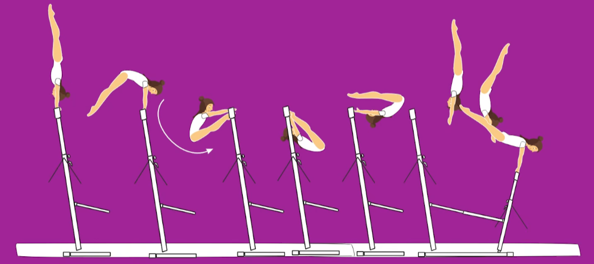

The Osijek World Cup delivered a standout Uneven Bars rotation, with three gymnasts from three different countries successfully debuting original elements-each now officially named in the Women’s Code of Points.
Romane Hamelin (FRA), Athanasia Mesiri (GRE), and Gabriela Rodrigues Barbosa (BRA) have all had their skills recognised by the Women’s Technical Committee, earning a place in the sport’s history.
While all three elements appear on Uneven Bars, they each bring something very different. Hamelin, in just her second senior season, put a new twist on the common Pak salto by adding a toe-on entry. Rodrigues Barbosa introduced a dismount that begins from a stalder and finishes with a front piked half-out. Mesiri’s skill is the boldest of the three-a clear hip circle flowing into a blind front layout dismount.
To have a skill named, gymnasts must submit it for review, receive a difficulty rating of at least C (0.3), and then perform it successfully at an official competition. All three met the criteria in Osijek.
Here’s a breakdown of the newly named elements:
THE HAMELIN

Performed at the 2026 Osijek World Cup (CRO) by Romane Hamelin (FRA)
Apparatus: Uneven Bars
Element description: Underswing on HB - salto backward stretched between bars to clear support on LB
Element value: C (0.3)
Name awarded: The Hamelin